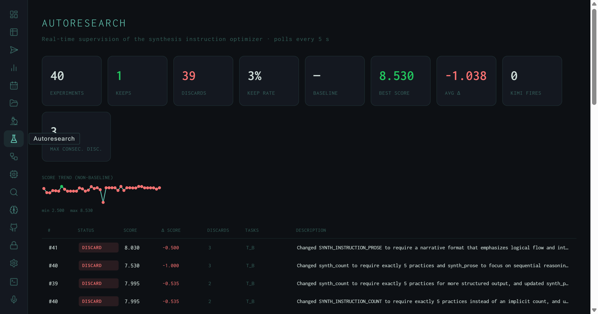
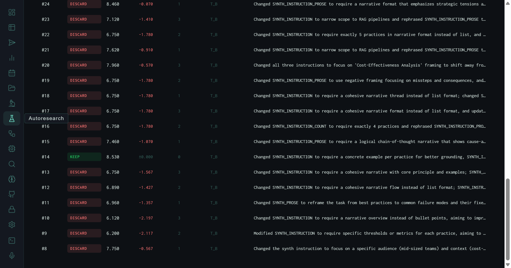

The Autoresearch View: 40 Experiments, One Keep, and a 3% Signal Rate
Real-time supervision of the synthesis instruction optimizer. 40 experiments run, 1 kept, 39 discarded. Best score: 8.530. Average delta: −1.038. The dashboard surfaces every mutation and its outcome.
The autoresearch loop is the harness's self-improvement mechanism. Every few minutes it proposes a change to SYNTH_INSTRUCTION — the core prompt that governs how the synthesis stage condenses papers into a research output — runs a set of evaluation tasks against the new instruction, scores the results with the Wiggum evaluator, and decides whether to keep or discard the change. The Autoresearch view is the live console for watching this process.

Header stats panel: 40 experiments evaluated, 1 kept, 39 discarded, 3% keep rate. Best score achieved: 8.530. Average score delta per experiment: −1.038 — meaning the median mutation makes things worse. Score trend sparkline shows the range: min 2.500 to max 8.530.
Header Stats
The headline numbers tell a sparse-signal story: out of 40 attempts to improve synthesis quality, only 1 produced a measurable gain. An average delta of −1.038 means the typical experiment actually makes outputs worse — the optimizer is exploring a landscape where most directions are downhill. This is expected for a prompt optimizer working on a already-decent baseline: the gains are real but rare.
Kimi Fires: 0 records how many times the harness escalated to Kimi (a more capable model) for a second-opinion evaluation pass. Zero fires means the local Wiggum evaluator was sufficient to resolve all experiment decisions without escalation — the local scoring signal was clear enough on its own.
Score Trend Sparkline
Below the stat cards, a compact sparkline charts score across all experiments. The range annotation (min 2.500 max 8.530) immediately shows the optimizer encountered both near-failure outputs and its single best result within the same 40-experiment window. The sparkline shape — jagged, with occasional deep drops — is the visual signature of a hill-climbing search on a noisy landscape: most steps are flat or downward, with infrequent jumps upward.
The Experiment Table
The main body of the view is a table listing every experiment with its full metadata:

The full experiment table scrolled to experiment #14 — the only KEEP in 40 attempts, at score 8.530. All other rows are red DISCARD. The description column shows the exact SYNTH_INSTRUCTION change that was tested.
What the Optimizer Actually Tried
The description column is the most informative part of the table. It reveals what the optimizer's mutation strategy actually looks like in practice — not abstract "prompt optimization" but specific, readable changes to the synthesis instruction:
Count constraints
"Require exactly 5 practices" — experiments that add or change the required count of output items. Most scored lower than free-form outputs, suggesting over-constraining the count hurts synthesis diversity.
Format mutations
"Narrative format emphasizing logical flow" vs. list format — experiments that switch between prose and structured output. Narrative mutations consistently degraded scores; the evaluator favors structure.
Reasoning requirements
"Sequential reasoning" and "chain-of-thought that shows cause-and-effect" — adding explicit reasoning chains. Mixed results; some improved depth scores but reduced overall quality.
Concrete grounding
Experiment #14 (the KEEP): "require a concrete example per practice for better grounding." This is the only mutation that produced a measurable improvement — specificity over abstraction.
The Keep Decision
A KEEP is issued when the experiment's score exceeds the current best score by a statistically meaningful margin. Experiment #14 achieved 8.530 against a baseline that was already tracking around 8.0–8.1 — a 0.5-point gain that cleared the threshold. The instruction change was specific: adding "require a concrete example per practice" pushed the evaluator's depth and specificity rubric dimensions up without introducing the formatting rigidity that killed other experiments.
Experiment #14's SYNTH_INSTRUCTION variant became the new baseline. Subsequent experiments (#15–#41) are all measured against it — which explains why their Δ values look small even though their absolute scores are similar. They're not failing to beat the original baseline; they're failing to beat the improved one.
The Loop Mechanics
The autoresearch loop runs as a background process that polls every 5 seconds for new evaluation results. When a new experiment completes, the view updates in real time — the stat counters increment, the sparkline extends, and the new row appears at the top of the table. DISCARD/KEEP decisions are immediate; there's no human in the loop unless you intervene manually by pausing the process.
The DISCARD count (39 out of 40) might look like failure, but it's the expected behavior of a search process that explores a high-dimensional instruction space with a relatively smooth but hard-to-improve objective. Most directions are wrong. The one that was right produced a permanent baseline improvement that every subsequent run inherits.
The scores produced by KEEP and DISCARD experiments, along with their instruction pairs, feed directly into the Fine-tune pipeline as DPO preference pairs — making the autoresearch loop the upstream data source for model improvement, not just prompt improvement.